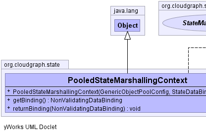
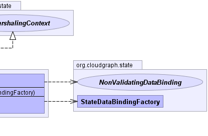

public class PooledStateMarshallingContext extends java.lang.Object implements StateMarshalingContext
StateNonValidatingDataBinding,
StateMarshalingContext|  |  |
| Constructor and Description |
|---|
PooledStateMarshallingContext(org.apache.commons.pool2.impl.GenericObjectPoolConfig config,
StateDataBindingFactory factory) |
| Modifier and Type | Method and Description |
|---|---|
NonValidatingDataBinding |
getBinding() |
void |
returnBinding(NonValidatingDataBinding binding) |
public PooledStateMarshallingContext(org.apache.commons.pool2.impl.GenericObjectPoolConfig config,
StateDataBindingFactory factory)
public NonValidatingDataBinding getBinding()
getBinding in interface StateMarshalingContextpublic void returnBinding(NonValidatingDataBinding binding)
returnBinding in interface StateMarshalingContextCloudGraph® is a registered trademark of TerraMeta Software, Inc. Copyright © 2014 - All Rights Reserved.